使用docker和streamlit阿里云服务器部署简单的演示网页#
这是一篇尽可能新手向的文章，适合首次购买阿里云服务器，想要建一个简单的，用于演示网站的用户，比如深度学习/数据的交互式页面。不需要你有什么web开发经验，一步一步跟着搭建就好。我自己前后折腾了两天，写下这篇文章以免其他人绕弯路。
不用学前端编程，你就能用 Python 简单高效写出漂亮的交互式 Web 应用，将你的数据分析成果立即展示给团队和客户。
最终效果#
一个网站（ip地址）： http://47.115.79.16:8501
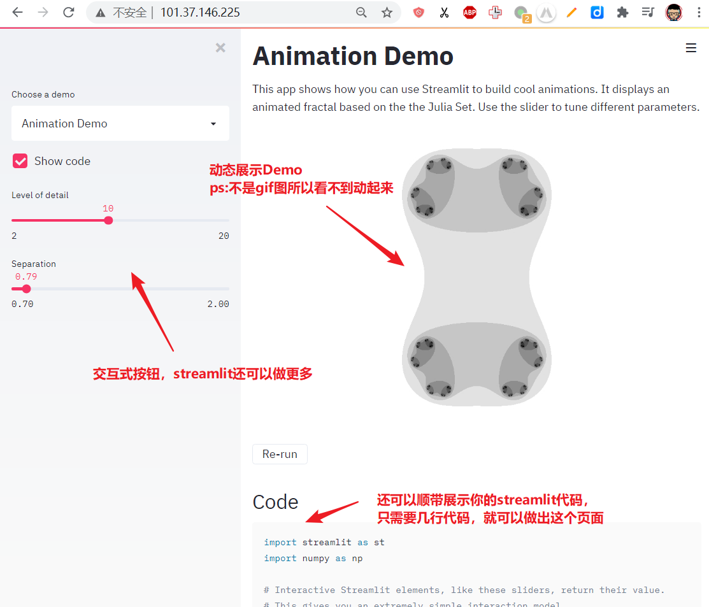
如果你购买了域名并且备案成功-国内需要，你就可以用域名来访问这个ip网址了，域名以及解析不在本文讨论范围内，可以上网自查，也不难
为了实现这个效果，你需要？#
- 一点钱：购买一台最低配置的阿里云服务器，参考价格：16￥/周；50￥/月；500￥/年。本文为了演示，买了一台最最便宜的，只花了16元。
- 一点docker知识：不过不用担心，照着本文依样画葫芦也可以。如果你想学习docker，推荐：docker从入门到实践
- 一点时间：半小时到5小时不等，取决于你想学到什么程度
- ssh客户端（xshell/vscode之类），连接服务器的时候用。（不会也没问题，可以用阿里云的网页连接服务器终端）
为什么使用docker？
方便部署，不需要在每一台新的服务器上都折腾很久。搞定这个你也可以用相同的方法弄flask、django的部署
为什么使用streamlit？
flask和django无疑更好，但加上前端的知识，学习成本较高，但我的目标只是搭建一个简单的交互页面，streamlit足够了而且非常简单
开始干吧！#
一、购买阿里云服务器#
-
访问阿里云官网，选择
云服务器ECS，在跳转后的页面中选择立即购买
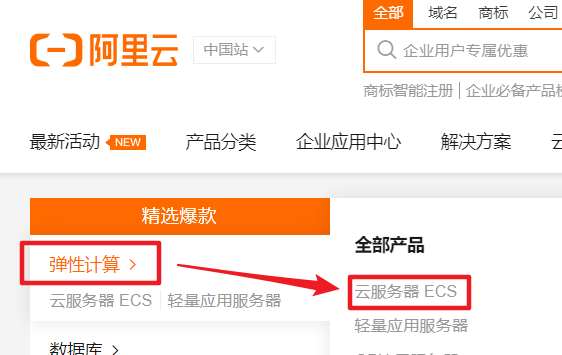你会看到很多其他类型的服务器，适用场景不同。
1. ECS(Elastic Compute Service)服务器可以简单理解为“弹性”服务器，也就是随时可以根据你的需求提高/降低电脑的配置，比如CPU更强，内存更大，更多服务器。
2. 轻量应用服务器：适合建立轻量的网站，配置也很简单。不过我个人希望自由度高一些，就没有用这个了。 -
本文为了方便起见，选择
一键购买，然后基本上按默认配置购买即可。注意点：服务器选最低配的（够用了），镜像那里选ubuntu 18.04，本文仅供演示，购买时长只选了一周（16元），付款搞定如果你对服务器比较熟悉或者能折腾想学习，可以选择
自定义购买，稍微费点时间
镜像的说明：ubuntu其他版本也可以，ubuntu用的人比较多，centos 和 aliyun linux（基于centos）也可以，后两者商用多一些。
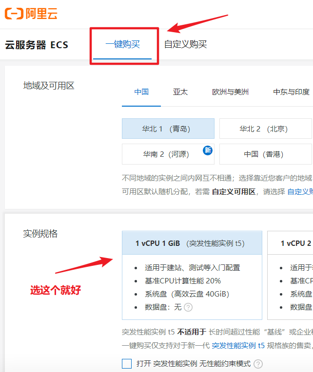
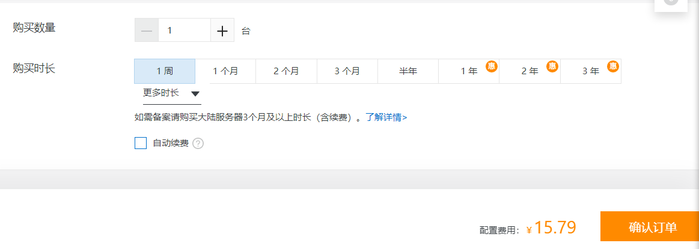
二、配置服务器#
由于我们刚才选的是一键购买，省略了一点配置，现在需要补上。做好心理准备，阿里云控制台有些复杂，我第一次用也很懵逼。如果你之前用自定义购买，下面可以跳过（记得开启80端口），不过你终究还是要熟悉控制台页面的，也可以看一下。
- 回到阿里云官网，登录后在页面右上角有
控制台按钮 - 进入控制台后，选择左上角的符号，展开选择
云服务器ECS
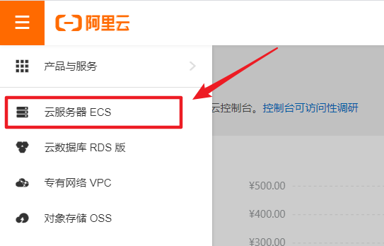 - 仿照图片，选择
实例，在实例更多那里选择重置密码，之后我们要用这个密码，通过ssh连接服务器
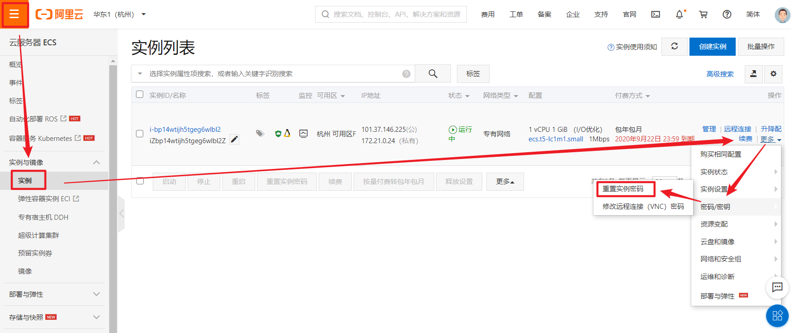有更加安全的连接服务器的方式，你可以在阿里云的帮助文档中看到
- 仿照下面几张图片，我们要修改安全组配置，加入80端口（http端口），以便之后能够访问网页
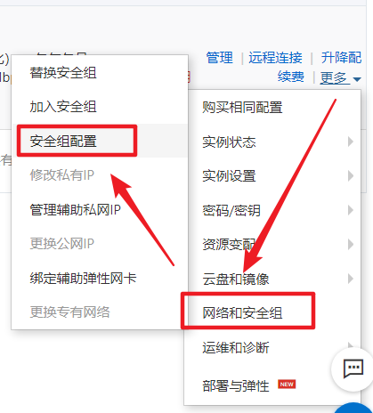
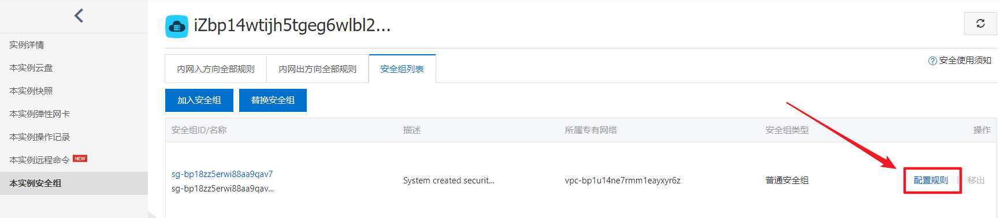
选择快速添加（手动添加也差不多），这里我顺带把443https端口也开了
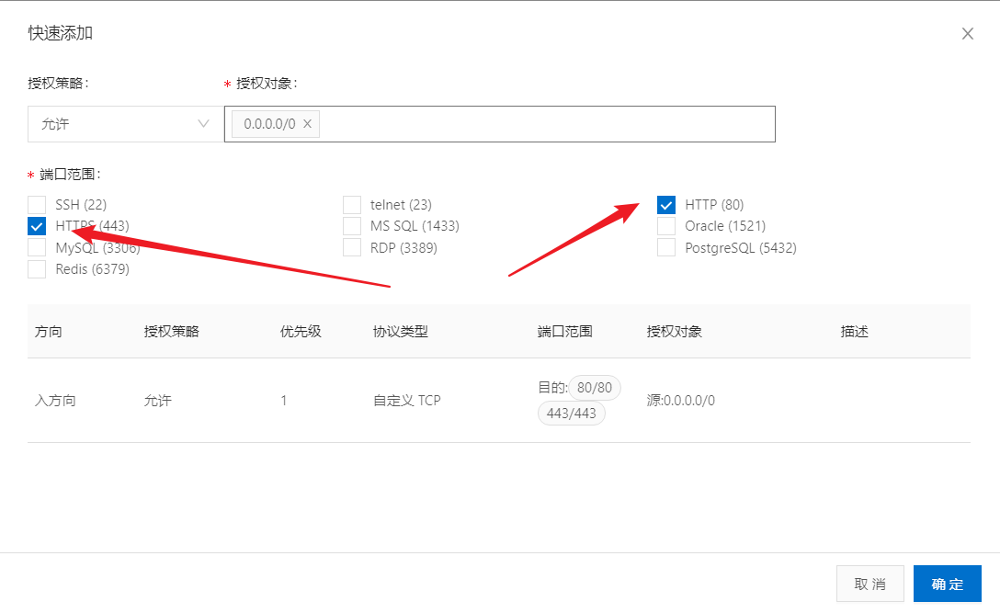
三、ssh连接服务器#
实例列表那里有公网ip，复制一下，我的是：101.37.146.225
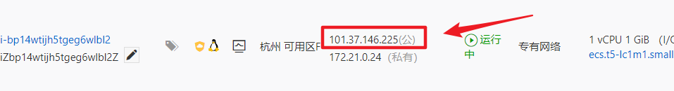
然后找一个ssh客户端（xshell/vscode），通过ssh root@101.37.146.225连接阿里云服务器，你也可以使用阿里云提供的其他连接方式（在实例页面选择远程连接）
四、安装docker#
你也完全可以不使用docker，在服务器上安装python环境和streamlint就可以了，不过docker可以简化这个流程
在阿里云服务器的终端中输入以下指令
apt update # 必须先update，才能安装软件
curl -fsSL get.docker.com -o get-docker.sh
sudo sh get-docker.sh --mirror Aliyun # mirror是镜像，为了加速
正常来讲为了权限控制，还需要创建一个docker用户，不过这里为了方便省略掉了
五、使用docker创建streamlit镜像并部署#
这是一个简单的演示，并非是使用docker的最佳实践
创建一个文件夹，创建Dockerfile，内容为（注释可以删掉）
# 从python3.6镜像基础上创建
FROM python:3.6
# 设置镜像源，提高pip install 速度
RUN pip config set global.index-url https://mirrors.aliyun.com/pypi/simple/ \
&& pip install streamlit
# streamlit hello创建一个演示页面，映射80端口以便网页访问
CMD ["streamlit","hello", "--server.port","80"]
然后执行
docker build -t streamlit . （注意结尾有一个.符号），耐心等待一段时间
这个指令用于创建一个streamlit的镜像（docker术语），
-t streamlit指定了这个镜像的名字，最后一个.表示构建的上下文路径
然后使用streamlit镜像创建容器，运行streamlit
docker run -p 80:80 streamlit
然后它会提示你
External URL: http://101.37.146.225:80，由于80是http的默认端口，所以你在浏览器中直接输入101.37.146.225就可以了（换成你的阿里云公网ip地址）
本文最后将streamlit部署在另一个服务器的8501端口了，所以应当访问这个：http://47.115.79.16:8501
Done!! 搞定！你可以在网址中愉快地玩耍了
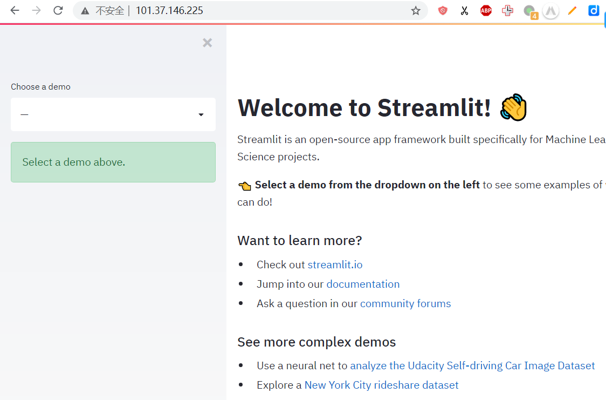
六、下一步#
- 学习docker和streamlit创建更好玩的网站！学习资料在此
- docker从入门到实践
- streamlit：王树义老师的教程或者streamlit官网
- 使用nginx优化部署
- 购买域名并将域名指向这个服务器，方便你的同学、老师、客户查看